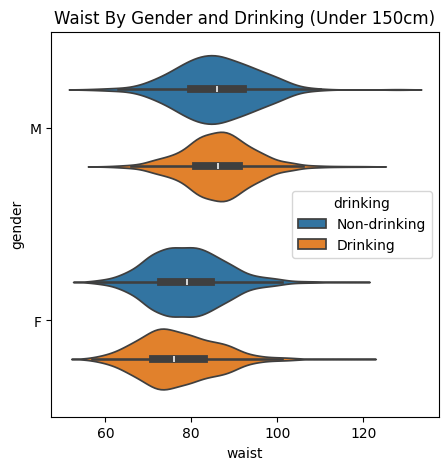

# 시각화 옵션5 : 그래프 선 모양# plot()의 linestyle 속성에 선 모양을 '-', '--', '-.', ':' 등으로 설정plt.title('Line shape Properties')data1 = [1, 3, 5, 7]data2 = [9, 7, 5, 3]plt.figure(figsize=(6, 4))plt.plot(data1, color='b', linestyle='--', label='dashed')plt.plot(data2, 'r:', label='dotted')plt.legend()plt.show()
# 시각화 옵션6 : 그림 범위 지정xdata = [15, 25, 35, 45]ydata = [2, 4, 6, 8]plt.figure(figsize=(3, 2))plt.plot(xdata, ydata, color='m', marker='s')#색상, 선, 모양, 마커를 한번에 설정할 수 있음#색상: r g b c m y k w#선 모양: -, --, -., :#마커 : + , . o v ^ splt.plot(xdata, ydata, ':oy')plt.xlim(10, 50)plt.ylim(0, 10)plt.show()
---------------------------------------------------------------------------NameError Traceback (most recent call last)
/tmp/ipython-input-1-1242113129.py in <cell line: 0>() 1# '2015년 미세먼지 매우 나쁨' 일수만 가져오기 2import matplotlib.pyplot as verybad2015
----> 3verybad2015 = data.copy() 4 verybad2015 = verybad2015[['area','2015_verybad']] 5 verybad2015
NameError: name 'data' is not defined
# 막대 그래프1plt.figure(figsize=(22, 4))plt.bar(verybad2015.index, verybad2015['count'], color='g')plt.xlabel('Area')plt.ylabel('Count')plt.title('2015 Fine Dust(PM10) - Very Bad Days By Area')plt.show()
from google.colab import filesuploaded = files.upload()import os, shutilos.makedirs('data', exist_ok=True)for fname in uploaded.keys(): shutil.move(fname, f"data/{fname}")import pandas as pd# 데이터 불러오기data = pd.read_csv('./data/04_data2.csv')data.head()
Saving 04_data2.csv to 04_data2.csv
SepalLength
SepalWidth
PetalLength
PetalWidth
Species
0
5.1
3.5
1.4
0.2
setosa
1
4.9
3.0
1.4
0.2
setosa
2
4.7
3.2
1.3
0.2
setosa
3
4.6
3.1
1.5
0.2
setosa
4
5.0
3.6
1.4
0.2
setosa
import matplotlib.pyplot as pltsetosa = data.loc[data['Species']=='setosa',]plt.figure(figsize=(5, 3))plt.title('Distribution of Petal Length in Iris Setosa')plt.hist(setosa['PetalLength'], bins=8, edgecolor='black')plt.xlabel('Petal Length')plt.ylabel('Count')plt.show()
# 상자수염 그래프 : 꽃받침 길이와 너비의 분포 비교# 꽃받침 길이는 꽃받침 너비보다 전체적으로 큰 값을 가지며, 변동 폭도 더 큼# 꽃받침 너비는 상대적으로 산포가 작고, 일부 이상값(outlier)이 존재함plt.figure(figsize=(5, 3))plt.boxplot([data['SepalLength'], data['SepalWidth']], tick_labels=['Sepal Length', 'Sepal Width'], vert=False, widths=0.5)plt.title('Sepal Length and Width')plt.show()
import matplotlib.pyplot as figsizeplt.figure(figsize=(5, 3))plt.boxplot([data['SepalLength'], data['SepalWidth']], tick_labels=['Sepal Length', 'Sepal Width'], vert=False, widths=0.5)plt.title('Sepal Length and Width')plt.show()
# Seaborn 라이브러리 설치#!pip install seaborn
# Seaborn 라이브러리 불러오기import matplotlib.pyplot as pltimport seaborn as sns
import numpy as npimport pandas as pd
from google.colab import filesuploaded = files.upload()import os, shutilos.makedirs('data', exist_ok=True)for fname in uploaded.keys(): shutil.move(fname, f"data/{fname}")# 데이터 불러오기data = pd.read_csv('./data/05_data1.csv')data.head()
Saving 05_data1.csv to 05_data1.csv
no
city_code
gender
age_code
height
weight
waist
systolic
diastolic
blood_sugar
cholesterol
triglycerides
HDL
LDL
hemoglobin
serum
smoking
drinking
0
1
36
1
9
165
60
72.1
127
79
90
188
58
58.0
118
15.0
1.1
1
0
1
5
41
2
12
155
50
75.2
144
89
110
220
171
53.0
133
12.4
0.7
1
0
2
6
27
1
9
185
85
94.0
114
72
86
234
183
50.0
147
16.4
1.1
3
1
3
7
44
1
9
165
80
93.0
112
73
250
119
265
26.0
40
15.7
0.7
3
1
4
9
41
2
17
150
50
82.0
136
65
104
177
61
63.0
101
13.3
0.7
1
0
# 데이터 전처리 : 라벨 매핑(label mapping)# replace() 함수는 명시되지 않은 값을 그대로 유지하지만,# map() 함수는 명시되지 않은 값을 NaN으로 처리함data6 = data.copy()data6 = data6.loc[:, ['gender', 'height', 'weight', 'waist', 'drinking', 'smoking']]data6['gender'] = data['gender'].replace({1: 'M', 2: 'F'})data6['drinking'] = data['drinking'].replace({0: 'Non-drinking', 1: 'Drinking'})data6['smoking'] = data['smoking'].replace({1: 'Non-smoking', 2: 'Quit-smoking', 3: 'Smoking'})data6.head()
gender
height
weight
waist
drinking
smoking
0
M
165
60
72.1
Non-drinking
Non-smoking
1
F
155
50
75.2
Non-drinking
Non-smoking
2
M
185
85
94.0
Drinking
Smoking
3
M
165
80
93.0
Drinking
Smoking
4
F
150
50
82.0
Non-drinking
Non-smoking
import numpy as npimport pandas as pdimport matplotlib.pyplot as pltimport seaborn as sns
data.dtypes
0
no
int64
city_code
int64
gender
int64
age_code
int64
height
int64
weight
int64
waist
float64
systolic
int64
diastolic
int64
blood_sugar
int64
cholesterol
int64
triglycerides
int64
HDL
float64
LDL
int64
hemoglobin
float64
serum
float64
smoking
int64
drinking
int64
# 데이터 전처리 : 라벨 매핑(label mapping)# replace() 함수는 명시되지 않은 값을 그대로 유지하지만,# map() 함수는 명시되지 않은 값을 NaN으로 처리함data6 = data.copy()data6 = data6.loc[:, ['gender', 'height', 'weight', 'waist', 'drinking', 'smoking']]data6['gender'] = data['gender'].replace({1: 'M', 2: 'F'})data6['drinking'] = data['drinking'].replace({0: 'Non-drinking', 1: 'Drinking'})data6['smoking'] = data['smoking'].replace({1: 'Non-smoking', 2: 'Quit-smoking', 3: 'Smoking'})data6.head()
/tmp/ipython-input-56-2272414527.py:3: SettingWithCopyWarning:
A value is trying to be set on a copy of a slice from a DataFrame.
Try using .loc[row_indexer,col_indexer] = value instead
See the caveats in the documentation: https://pandas.pydata.org/pandas-docs/stable/user_guide/indexing.html#returning-a-view-versus-a-copy
data6['gender'] = data6['gender'].map({1: 'Male', 2: 'Female'})
gender
height
weight
waist
drinking
smoking
0
Male
165
60
72.1
0
1
1
Female
155
50
75.2
0
1
2
Male
185
85
94.0
1
3
# 데이터 전처리 : 라벨 매핑(label mapping)# replace() 함수는 명시되지 않은 값을 그대로 유지하지만,# map() 함수는 명시되지 않은 값을 NaN으로 처리함data6 = data.copy()data6 = data6.loc[:, ['gender', 'height', 'weight', 'waist', 'drinking', 'smoking']]data6['gender'] = data['gender'].replace({1: 'M', 2: 'F'})data6['drinking'] = data['drinking'].replace({0: 'Non-drinking', 1: 'Drinking'})data6['smoking'] = data['smoking'].replace({1: 'Non-smoking', 2: 'Quit-smoking', 3: 'Smoking'})data6.head()
# 막대 그래프 : 성별에 따른 음주 여부, 흡연 상태 분포fig = plt.figure(figsize=(8, 4))area1 = fig.add_subplot(1, 2, 1)area2 = fig.add_subplot(1, 2, 2)ax1 = sns.barplot(x='gender', y='count', hue='drinking', data=drinking, ax=area1)ax2 = sns.barplot(x='gender', y='count', hue='smoking', data=smoking, ax=area2)fig.suptitle('2020 Health Check Drinking & Smoking Type by Gender', fontweight='bold')area1.set_title('Drinking Type')area2.set_title('Smoking Type')plt.tight_layout(rect=[0, 0, 1, 0.99])plt.show()
# 데이터 전처리 : 성별에 따라 데이터 분리maledata = data6.copy()maledata = maledata.loc[maledata['gender']=='M',:]femaledata = data6.copy()femaledata = femaledata.loc[femaledata['gender']=='F',:]
# 히스토그램 : 성별에 따른 몸무게 분포plt.figure(figsize=(5, 3))sns.histplot(maledata['weight'], bins=8, alpha=0.7, label='Male', color='g')sns.histplot(femaledata['weight'], bins=8, alpha=0.7, label='Female', color='r')plt.xlim(20, 130)plt.xlabel('Weight')plt.ylabel('Count')plt.title('Distribution of Weight')plt.legend()plt.show()
# 두 막대 그래프에서 겹치는 부분 색깔 표시하기import numpy as npimport pandas as pdimport matplotlib.pyplot as pltimport seaborn as sns# 예시용 데이터프레임 (실제 사용 시 maledata, femaledata를 불러와야 함)# 여기선 임의로 생성np.random.seed(0)maledata = pd.DataFrame({'weight': np.random.normal(75, 10, 500)})femaledata = pd.DataFrame({'weight': np.random.normal(65, 8, 500)})# 공통 bin 정의bins = np.linspace(30, 110, 20)# 히스토그램 수치 계산 (density=False: count 기준)male_hist, _ = np.histogram(maledata['weight'], bins=bins)female_hist, _ = np.histogram(femaledata['weight'], bins=bins)# 겹치는 부분overlap = np.minimum(male_hist, female_hist)# x 좌표 (bin 중심)bin_centers = (bins[:-1] + bins[1:]) /2width = bins[1] - bins[0]# 시각화plt.figure(figsize=(7, 4))plt.bar(bin_centers, male_hist, width=width, alpha=0.5, color='green', label='Male', edgecolor='black')plt.bar(bin_centers, female_hist, width=width, alpha=0.5, color='red', label='Female', edgecolor='black')plt.bar(bin_centers, overlap, width=width, color='purple', label='Overlap') # 겹치는 부분plt.xlim(30, 110)plt.xlabel('Weight')plt.ylabel('Count')plt.title('Distribution of Weight by Gender')plt.legend()plt.tight_layout()plt.show()
# 히스토그램 & 커널 밀도 추정(KDE) : 성별에 따른 허리둘레 분포plt.figure(figsize=(5, 3))sns.histplot(maledata['waist'], bins=7, alpha=0.5, label='Male', kde=True)sns.histplot(femaledata['waist'], bins=7, alpha=0.5, label='Female', color='r', kde=True)plt.xlim(40,130)plt.xlabel('Waist')plt.ylabel('Count')plt.title('Distribution of Waist with KDE')plt.legend()plt.show()
import numpy as npimport pandas as pdimport matplotlib.pyplot as pltfrom scipy.stats import gaussian_kde# 샘플 데이터 (실제 데이터에 맞게 대체)np.random.seed(1)maledata = pd.DataFrame({'waist': np.random.normal(85, 10, 300)})femaledata = pd.DataFrame({'waist': np.random.normal(75, 8, 300)})# KDE 계산x_vals = np.linspace(40, 130, 500)kde_male = gaussian_kde(maledata['waist'])kde_female = gaussian_kde(femaledata['waist'])y_male = kde_male(x_vals)y_female = kde_female(x_vals)# 겹치는 부분 계산y_overlap = np.minimum(y_male, y_female)# 시각화plt.figure(figsize=(7, 4))# KDE 선plt.plot(x_vals, y_male, label='Male', color='green')plt.plot(x_vals, y_female, label='Female', color='red')# 겹치는 영역 색칠plt.fill_between(x_vals, y_overlap, color='purple', alpha=0.4, label='Overlap')# 설정plt.xlabel('Waist')plt.ylabel('Density')plt.title('KDE of Waist Circumference by Gender')plt.legend()plt.xlim(40, 130)plt.tight_layout()plt.show()
import numpy as npimport pandas as pdimport matplotlib.pyplot as pltimport seaborn as snsfrom scipy.stats import gaussian_kde# 샘플 데이터np.random.seed(1)maledata = pd.DataFrame({'waist': np.random.normal(85, 10, 300)})femaledata = pd.DataFrame({'waist': np.random.normal(75, 8, 300)})# KDE 계산용 x축x_vals = np.linspace(40, 130, 500)kde_male = gaussian_kde(maledata['waist'])kde_female = gaussian_kde(femaledata['waist'])y_male = kde_male(x_vals)y_female = kde_female(x_vals)y_overlap = np.minimum(y_male, y_female)# 시각화plt.figure(figsize=(7, 4))# 히스토그램 먼저 그리기sns.histplot(maledata['waist'], bins=15, color='green', alpha=0.4, label='Male', edgecolor='black')sns.histplot(femaledata['waist'], bins=15, color='red', alpha=0.4, label='Female', edgecolor='black')# KDE 라인 수동 추가plt.plot(x_vals, y_male *300* (130-40) /15, color='green') # 히스토그램 스케일에 맞춰 조정plt.plot(x_vals, y_female *300* (130-40) /15, color='red')# 겹치는 부분 색칠 (KDE 기준)plt.fill_between(x_vals, y_overlap *300* (130-40) /15, color='purple', alpha=0.4, label='KDE Overlap')# 설정plt.xlim(40, 130)plt.xlabel('Waist')plt.ylabel('Count')plt.title('Waist Distribution with KDE and Overlap')plt.legend()plt.tight_layout()plt.show()
import numpy as npimport pandas as pdimport matplotlib.pyplot as pltimport seaborn as snsfrom scipy.stats import gaussian_kde# 샘플 데이터np.random.seed(1)maledata = pd.DataFrame({'waist': np.random.normal(85, 10, 300)})femaledata = pd.DataFrame({'waist': np.random.normal(75, 8, 300)})# 동일한 bin 설정 (막대 7개)bins = np.linspace(40, 130, 8)bin_width = bins[1] - bins[0]# KDE 계산x_vals = np.linspace(40, 130, 500)kde_male = gaussian_kde(maledata['waist'])kde_female = gaussian_kde(femaledata['waist'])y_male = kde_male(x_vals)y_female = kde_female(x_vals)y_overlap = np.minimum(y_male, y_female)# 스케일 조정scale =len(maledata) * bin_width # count 기준으로 맞춤# 시각화plt.figure(figsize=(7, 4))sns.histplot(maledata['waist'], bins=bins, color='green', alpha=0.4, edgecolor='black', label='Male')sns.histplot(femaledata['waist'], bins=bins, color='red', alpha=0.4, edgecolor='black', label='Female')plt.plot(x_vals, y_male * scale, color='green')plt.plot(x_vals, y_female * scale, color='red')plt.fill_between(x_vals, y_overlap * scale, color='purple', alpha=0.4, label='KDE Overlap')# 설정plt.xlim(40, 130)plt.xlabel('Waist')plt.ylabel('Count')plt.title('Waist Distribution with KDE and Overlap')plt.legend()plt.tight_layout()plt.show()
# 상자수염 그래프 : 성별 및 음주 여부에 따른 몸무게 분포plt.figure(figsize=(8, 4))plt.title('Weight By Gender and Drinking')sns.boxplot(x='drinking', y='weight', hue='gender', width=0.7, gap =0.1, data=data6)plt.show()
# 상자수염 그래프 : 성별 및 흡연 상태에 따른 몸무게 분포plt.figure(figsize=(8, 6))plt.title('Weight By Gender and Drinking')sns.boxplot(x='weight', y='smoking', hue='gender', width=0.7, gap=0.1, data=data6, orient='h')plt.show()
# 카운트 플롯1 : 음주 여부에 따른 성별 분포plt.figure(figsize=(5, 3))plt.title('Gender and Drinking')sns.countplot(x='drinking', hue='gender', data=data6)plt.show()
# 카운트 플롯2 : 흡연 상태에 따른 성별 분포plt.figure(figsize=(5, 3))plt.title('Gender and Smoking')sns.countplot(y='smoking', hue='gender', data=data6, order=['Smoking', 'Quit-smoking', 'Non-smoking'])plt.show()
# 데이터 전처리 : 8개 건강 지표 선택data8 = data.copy()data8 = data8.loc[:, ['height', 'weight', 'waist','systolic', 'diastolic', 'cholesterol', 'HDL', 'LDL']]
# 히트맵 : 8개의 건강 지표 간 상관관계# 상관계수는 -1에서 +1 사이의 값을 가지므로,# vmin=-1, vmax=1 옵션 설정으로 색상 범위의 균형을 맞춤correlation_data8 = data8.corr()upp_mat = np.triu(correlation_data8)plt.figure(figsize=(8, 6))plt.title('Correlation Heatmap')sns.heatmap(correlation_data8, annot=True, mask=upp_mat, cmap='seismic', vmin=-1, vmax=1)plt.xticks(rotation=45)plt.show()
# 바이올린 플롯1 : 성별 및 음주 여부별 몸무게(120 미만) 분포plt.figure(figsize=(5, 3))plt.title('Weight By Gender and Drinking (Under 120kg)')sns.violinplot(x='gender', y='weight', hue='drinking', gap=0.1, data=data6[data6.weight<120])plt.show()# 상자수염 그래프와 밀도 곡선을 합친 것
# 바이올린 플롯2 : 성별 및 음주 여부별 허리둘레(150 미만) 분포plt.figure(figsize=(5, 5))plt.title('Waist By Gender and Drinking (Under 150cm)')sns.violinplot(y='gender', x='waist', hue='drinking', gap=0.1, data=data6[data6.waist<150])plt.show()

# 상관관계 그래프import pandas as pdimport seaborn as snsimport matplotlib.pyplot as plt# 샘플 데이터df = pd.DataFrame({'height': [160, 165, 170, 175, 180],'weight': [55, 60, 65, 70, 75]})# 산점도sns.scatterplot(data=df, x='height', y='weight')plt.title('Height vs Weight')plt.show()
# 회귀분석 그래프sns.regplot(data=df, x='height', y='weight') # 회귀선 포함 # 상관 관계 그래프: 선형관계를 보이는 점들 # 회귀 분석 그래프: +직선plt.title('Regression: Predicting Weight from Height')plt.show()
## 상관계수# 행복지수와 GDP 간 상관계수는 0.79로 나타남 -> 강한 양의 상관관계# 행복지수와 Freedom 간 상관계수는 0.61로 나타남 -> 뚜렷한 양의 상관관계corr = df1[['Score', 'GDP_per_capita', 'Freedom']].corr()
# 한글 깨짐 현상에 대한 해결 방법import matplotlib.pyplot as pltimport matplotlib as mplplt.rc('font', family='Malgun Gothic')mpl.rcParams['axes.unicode_minus'] =False
# scikit-learn 설치하기#!pip install scikit-learn
# sklearn의 linear_model 모듈에서 LinearRegression 클래스 불러오기from sklearn.linear_model import LinearRegression
Reading package lists... Done
Building dependency tree... Done
Reading state information... Done
The following NEW packages will be installed:
fonts-nanum
0 upgraded, 1 newly installed, 0 to remove and 35 not upgraded.
Need to get 10.3 MB of archives.
After this operation, 34.1 MB of additional disk space will be used.
Get:1 http://archive.ubuntu.com/ubuntu jammy/universe amd64 fonts-nanum all 20200506-1 [10.3 MB]
Fetched 10.3 MB in 1s (8,191 kB/s)
debconf: unable to initialize frontend: Dialog
debconf: (No usable dialog-like program is installed, so the dialog based frontend cannot be used. at /usr/share/perl5/Debconf/FrontEnd/Dialog.pm line 78, <> line 1.)
debconf: falling back to frontend: Readline
debconf: unable to initialize frontend: Readline
debconf: (This frontend requires a controlling tty.)
debconf: falling back to frontend: Teletype
dpkg-preconfigure: unable to re-open stdin:
Selecting previously unselected package fonts-nanum.
(Reading database ... 126284 files and directories currently installed.)
Preparing to unpack .../fonts-nanum_20200506-1_all.deb ...
Unpacking fonts-nanum (20200506-1) ...
Setting up fonts-nanum (20200506-1) ...
Processing triggers for fontconfig (2.13.1-4.2ubuntu5) ...
/usr/share/fonts: caching, new cache contents: 0 fonts, 1 dirs
/usr/share/fonts/truetype: caching, new cache contents: 0 fonts, 3 dirs
/usr/share/fonts/truetype/humor-sans: caching, new cache contents: 1 fonts, 0 dirs
/usr/share/fonts/truetype/liberation: caching, new cache contents: 16 fonts, 0 dirs
/usr/share/fonts/truetype/nanum: caching, new cache contents: 12 fonts, 0 dirs
/usr/local/share/fonts: caching, new cache contents: 0 fonts, 0 dirs
/root/.local/share/fonts: skipping, no such directory
/root/.fonts: skipping, no such directory
/usr/share/fonts/truetype: skipping, looped directory detected
/usr/share/fonts/truetype/humor-sans: skipping, looped directory detected
/usr/share/fonts/truetype/liberation: skipping, looped directory detected
/usr/share/fonts/truetype/nanum: skipping, looped directory detected
/var/cache/fontconfig: cleaning cache directory
/root/.cache/fontconfig: not cleaning non-existent cache directory
/root/.fontconfig: not cleaning non-existent cache directory
fc-cache: succeeded
## 공부 시간(독립변수)에 따른 시험 성적(종속변수)의 변화# 데이터프레임 생성import pandas as pdimport matplotlib.pyplot as pltfrom sklearn.linear_model import LinearRegressiondata = pd.DataFrame({'study_time': [2, 4, 6, 8, 10],'score': [81, 93, 90, 97, 100]})# 산점도 : 두 변수 간 상관관계 확인plt.figure(figsize=(5, 3))plt.scatter(data['study_time'], data['score'])plt.xlabel('Study Time (hours)')plt.ylabel('Score')plt.show()# 독립변수, 종속변수 분리# scikit-Learn에서 입력 데이터(feature)를 2차원 배열로 요구함X = data[['study_time']]y = data['score']# 선형 회귀모형 객체 생성 및 학습model = LinearRegression()model.fit(X, y)# 7시간 공부했을 때, 시험 점수 예측newdata = pd.DataFrame({'study_time': [7]})predicted_score = model.predict(newdata)print(predicted_score)
[94.3]
# 데이터 불러오기from sklearn.datasets import fetch_california_housingdata = fetch_california_housing(as_frame=True)df = data.framedf.head()